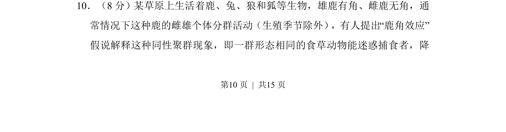
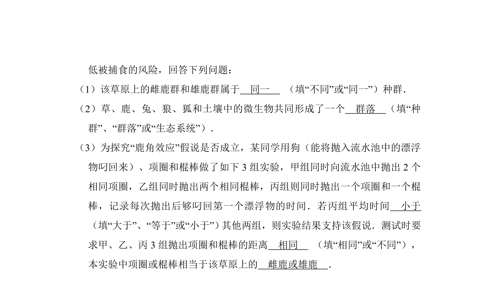
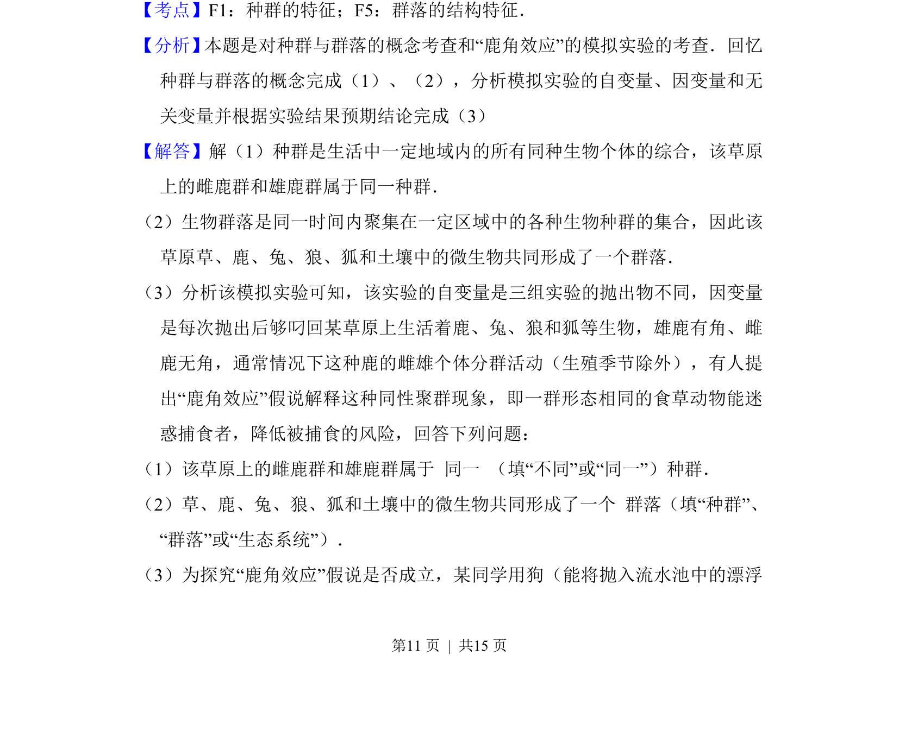
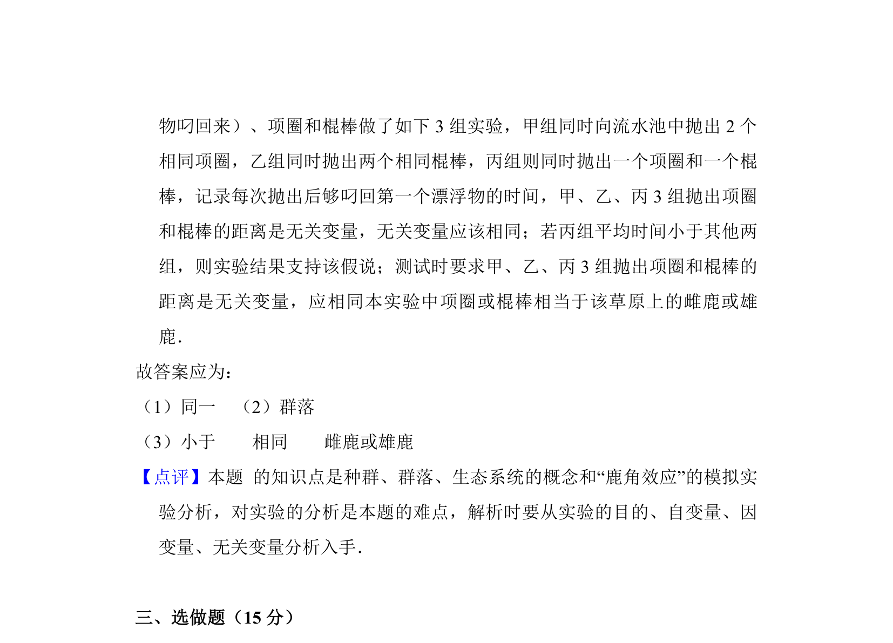

考点：行为生态学 自然选择 种间关系


题目以“鹿角效应”假说为情境，考查动物行为与生态适应的解释能力。


📄 原 PDF 第 10 页：
素材/真题/吉林/2008-2024·（吉林）生物高考真题/2012年高考生物试卷（新课标）（解析卷）.pdf
10．（8分）某草原上生活着鹿、兔、狼和狐等生物，雄鹿有角、雌鹿无角，通 常情况下这种鹿的雌雄个体分群活动（生殖季节除外） ，有人提出“鹿角效应” 假说解释这种同性聚群现象，即一群形态相同的食草动物能迷惑捕食者，降